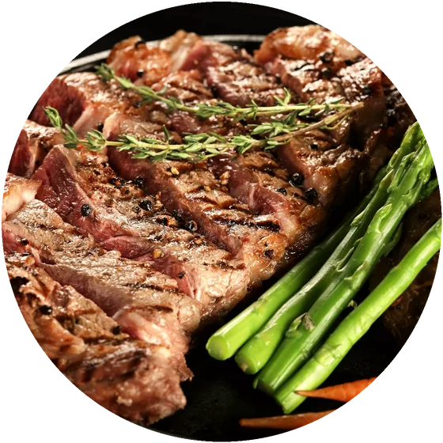
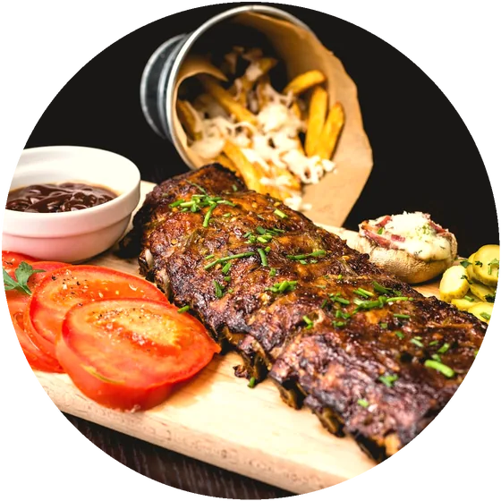
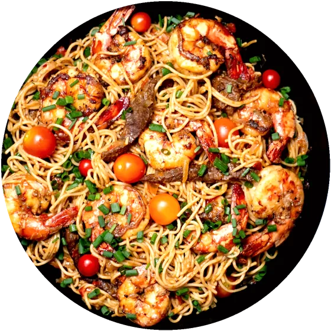
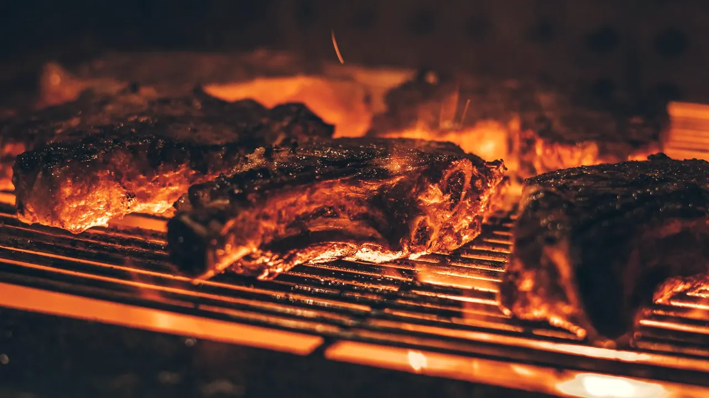
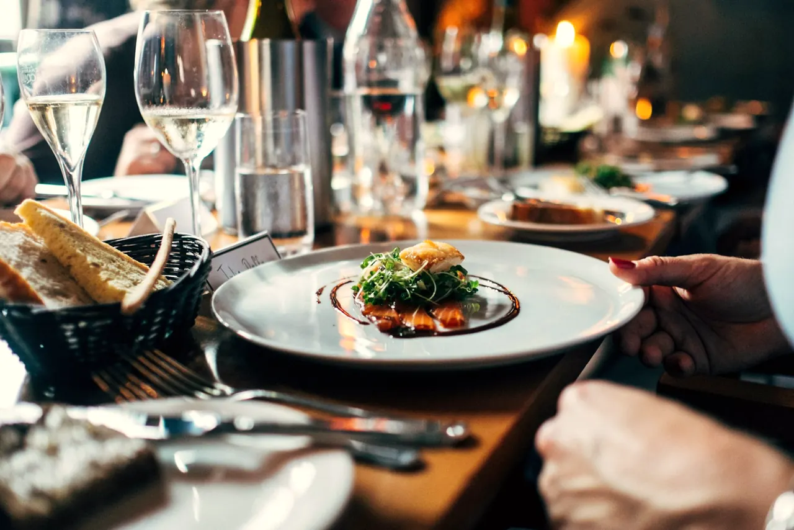

Brasa de lenha e massas frescas · Centro, São Paulo
Carne na brasa de lenha. Massa feita de manhã.
Desde 1998 num casarão do Centro de São Paulo. A família Ferraz cuida do fogo, da massa e da mesa.
Fechado · abre hoje às 11h30
- Hoje
- Fechado agora, abre hoje às 11h30
11:30 – 00:00 - Endereço
- Rua das Laranjeiras, 245, Centro
Como chegar - Siga a casa
- Instagram @casabrasaFacebookWhatsApp
A casa
Começou em 1998 numa garagem, com seis mesas e a churrasqueira de tijolo do Seu Antônio. Hoje ocupa um casarão de 1920 a duas quadras dali, e quem comanda a cozinha é a neta.
Dona Lúcia e Seu Antônio Ferraz, 1998

Os mais pedidos
Da cozinha para a mesa
-

Prato da casaPicanha na brasa
Picanha maturada fatiada, aspargos grelhados, cenouras e tomilho.
R$ 89,00
sem glúten
-

Desmancha -

Espaguete com camarão
Espaguete ao molho de tomate com camarões, tomatinhos e manjericão.
R$ 78,00
picante · contém glúten, frutos do mar
-

Tiramisù
Mascarpone, biscoito embebido em café e cacau.
R$ 30,00
vegetariano · contém glúten, lactose, ovo
Como a gente cozinha
Brasa de lenha e massas frescas

Lenha, não gás
As carnes assam na brasa de lenha, cada corte no seu tempo.
Massa do dia
Aberta toda manhã na cozinha. O tagliatelle é o mesmo de 1998.
Fornecedor com nome
Folhas, legumes e queijos vêm de pequenos produtores da região.
Sem pressa
A costela fica doze horas no forno. O ragu, a tarde inteira.
O que dizem
A picanha é perfeita e o atendimento parece de casa de vó. Virou nosso almoço de domingo.
Camila Rocha · Google
O tagliatelle da Dona Lúcia é inesquecível. O casarão é lindo, vale reservar a varanda.
Rafael Mendes · Google
Comemoramos o aniversário da minha mãe lá. Equipe atenciosa e sobremesas incríveis.
Juliana Souza · TripAdvisor
Depoimentos de demonstração. Troque pelos reais antes de publicar.

Venha conhecer a casa
Novidades, pratos do dia e bastidores da cozinha nas redes.
Onde estamos
Rua das Laranjeiras, 245
Centro, São Paulo — SP- Estacionamento
- Convênio com o estacionamento ao lado
- Acessibilidade
- Rampa na entrada e banheiro adaptado
- Pet
- Pets são bem-vindos na varanda
- Wi-Fi
- Gratuito para clientes
Horários
Fechado · abre hoje às 11h30
- Segunda
- Fechado
- Terça
- 11:30 – 15:00 · 18:30 – 23:00
- Quarta
- 11:30 – 15:00 · 18:30 – 23:00
- Quinta
- 11:30 – 15:00 · 18:30 – 23:00
- Sexta
- 11:30 – 15:00 · 18:30 – 00:00
- Sábado (hoje)
- 11:30 – 00:00
- Domingo
- 11:30 – 17:00